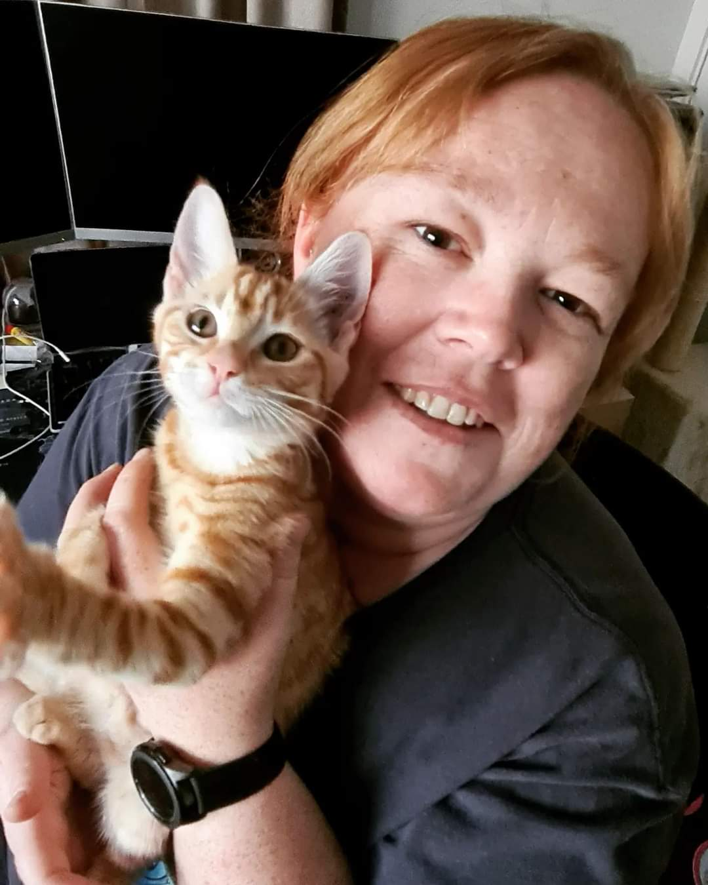

Ideal Jobs
In general, our ideal jobs are all remarkably similar with the exception of Robert. Most of us are looking at going in the direction of being a Software Developer/Engineer. Robert’s ideal job is as a Business Developer.
What common elements are there, if any?
The most common element across all our group's ideal jobs is that almost every job has teamwork, problem solving and written and verbal communication skills as a requirement. As most of us are looking at going in the Software Developer/Engineer direction, these jobs all have a deep understanding of writing code as a similarity.
What differentiates each position from the others, if anything?
Robert’s ideal job is the only one that is really different as it is a business development job and is not directly related to IT. It has some elements of IT as it is a job that requires technical knowledge of the products that the company makes. The job also requires basic computer skills such as familiarity with Microsoft office.
As for the rest of the group, each job has their own specific set of coding/platform skills depending on what type of systems they are using.
How similar or different are your career plans across the group?
Most of us have very similar career plans as we are all interested in a job that heavily involves coding, whether that is building websites, games or creating apps.
Robert is the only one in the group whose job is different as his is a business development role. This role entails finding new customers and identifying ways to grow the business rather than being directly involved in the IT side of the business.
Helen
Junior Software Developer
As a Junior Software Developer in our company, you will help with development work on our primary product. Our goal for this position is to build both our product and your development skills. You will receive training and help develop and support our web-based solutions as part of our enthusiastic dev team
Skills Required
- Problem solving
- Strong coding skills
- Written and Verbal Communication
- Work well in a team
- Experience with github
- Scripting skills in bash and/or Python
- PHP coding
- Docker
Aiden
Junior Software Engineer

Junior software engineers are entry-level members of a software development team. They assist the team with basic tasks under the supervision of their seniors, such as learning base code and writing simple code, and debugging existing software.
Skills Required
- Problem solving
- Working in a team
- Written and Verbal Communication
- Golang
- React
- Swift
- Kotlin
- GCP (Google Cloud Platform)
Sean
Video Game Programmer

A Game Developer is a Software Developer who specialises in creating computer or video games. Game Developers may focus on one or more platforms (such as PlayStation, Xbox, Nintendo or PC), or specialise in mobile or handheld game development. They may specialise further in a particular aspect of game development, such as programming the game’s Artificial Intelligence or virtual landscapes.
Skills Required
- Coding in C, C++ and C#
- Working in a team
- Great verbal, written and interpersonal skills
- Excellent time management
- Able to familiarise quickly with codebases
- Problem Solving
Robert
Aviation Business Development Manager

A Business Development Manager is a professional who is responsible for the growth of their department. They work with their sales team to develop mutually beneficial proposals, negotiate contract terms and communicate effectively with stakeholders. A Business Development Manager can also be responsible for identifying and researching new clients and maintaining existing relationships.
Skills Required
- Communication skills
- Negotiation skills
- Project management
- Analytical and problem-solving skills
- Time management
- Experience with Microsoft's range of office apps
- great verbal, written and interpersonal skills
Joshua
Web Developer

A web developer makes and maintains websites. They are in charge of a site’s overall look and feel. Web developers also handle the technical aspects of a website, including its performance (website speed) and capacity (the maximum amount of traffic the site could handle at a given time). A web developer is usually knowledgeable in both graphic design and programming.
Skills Required
- Vue.js
- Bootstrap
- Tailwind CSS
- PHP
- Node.js
- PrestaShop
- Joomla
- Ubuntu/Linux
- MySQL and SQ Lite
- Git
- Docker, Docker Compose and DevOps
- Software Architecture
- Project Management
- Problem Solving
- Windows and Windows Server
- Experience with microsoft's range of office apps.
- Communication Skills
- Working in a team
Adam
Full Stack Web Developer
A Full Stack Web Developer is responsible for both the back end and front end of a website or application. This means they can provide end to end service and can be involved in projects that require databases and user interface aspects. They design, develop and maintain a system, website or application.
Skills Required
- Experience with Laravel framework, using Laravel to create APIs
- Experience with commercial experience
- Experience working with large data sets, and databases
- Experience with VueJS 2/3, Innertia JS is desirable
- Tertiary qualifications in relevant field are desirable but not mandatory
- Flexible attitude and able to work in fast-paced environment
- Ability to work autonomously as part of a small team